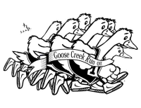

|
OAKLEY, IDAHO Saturday, July 18, 2020 The 2020 Goose Creek Run-Off is still on! However, due to time restraints and current social distancing requirements, some modifications are being made to the race, including the course. Please register by June 30 to receive your T-shirt. 10K RESULTS 1986 | 1987 | 1988 | 1989 | 1990 | 1991 | 1992 | 1993 | 1994 | 1995 1996 | 1997 | 1998 | 1999 | 2000 | 2001 | 2002 | 2003 | 2004 | 2005 2006 | 2007 | 2008 | 2009 | 2010 | 2011 | 2012 | 2013 | 2014 | 2015 2016 | 2017 | 2018 | 2019 | 2020 If you are unable to open these PDF files, please upgrade your Adobe Reader at Adobe.com "The Hopis consider running a form of prayer; they offer every step as a sacrifice to a loved one, and in return ask the Great Spirit to match their strength with some of His own." (Christopher McDougall) 
10K Entry Fee (NON-REFUNDABLE*):
10K The 10K will take place through the beautiful Oakley Valley and end at the Oakley City Park.
Registration must be completed on-line.
Early arrivers may pick up race packets or register Friday, July 17, at 200 W Main St. (by the city park) between the hours of 5pm and 7pm.
5K
The 5K will take place through the beautiful Oakley Valley and end at the Oakley City Park.
Walkers are welcome.
Registration must be completed on-line.
Early arrivers may pick up race packets or register Friday, July 17, at 200 W Main St. (by the city park) between the hours of 5pm and 7pm.
COURSE DESCRIPTION
Description will be posted soon.
KIDS RACE
A 1-mile kid's race around town will be held at approximately 8:30am for children under 12 years of age. Check in by the Oakley City Office at 8:00am. A $3.00 fee and a signed waiver are required.
AGE GROUPS (10K and 5K)
AWARDS
All 10K and 5K participants will receive:
A deluxe 2020 T-shirt
THANKS TO OUR SPONSORS!!
***GOLD*** |
Goose Creek Run-Off
PO Box 125
Oakley, ID 83346